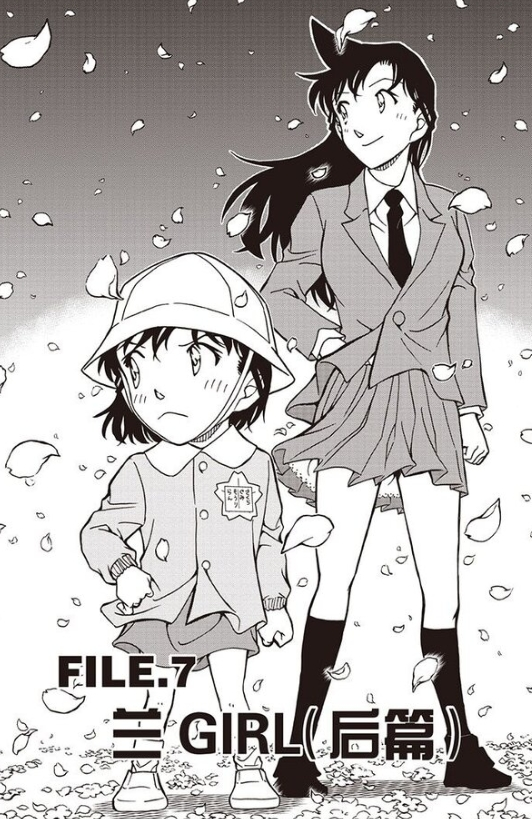
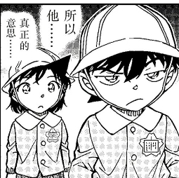

一楼喂百度
这个想法曾经回在别人贴下，但是我觉得值得开个新帖讨论。
我认为小志保和小新一初遇的时候做了伪装，因为她是混血，发色太明显了，正如芙莎绘小时候一直戴帽子一样，如果小志保偷溜出来玩想不被组织监视者发现，她很可能戴了假发，像是樱花班小兰那种发型，正因如此封面的小兰才没有角，因为实际上那副打扮的是穿了明美旧制服戴了假发的小志保，那个笑容也是小志保的。一直到小志保被组织抓回去，新一都没有看到小志保摘了假发的样子，所以他童年记忆里的小志保和小哀一直没有画等号。而小哀也再没戴过黑色长发的假发，只伪装柯南的时候戴过短发，如果有个案子小哀再变装了，很有可能就唤醒了柯南的记忆，或者有希子给小哀打扮的时候发现她长得很像以前见过的一个小女孩，发现当初的小女孩就是小志保，告诉新一，掀开初遇论。
我认为小志保和小新一初遇的时候做了伪装，因为她是混血，发色太明显了，正如芙莎绘小时候一直戴帽子一样，如果小志保偷溜出来玩想不被组织监视者发现，她很可能戴了假发，像是樱花班小兰那种发型，正因如此封面的小兰才没有角，因为实际上那副打扮的是穿了明美旧制服戴了假发的小志保，那个笑容也是小志保的。一直到小志保被组织抓回去，新一都没有看到小志保摘了假发的样子，所以他童年记忆里的小志保和小哀一直没有画等号。而小哀也再没戴过黑色长发的假发，只伪装柯南的时候戴过短发，如果有个案子小哀再变装了，很有可能就唤醒了柯南的记忆，或者有希子给小哀打扮的时候发现她长得很像以前见过的一个小女孩，发现当初的小女孩就是小志保，告诉新一，掀开初遇论。
2023-10-23 06:28 | 沉梦昂志am🐼:每次看文吧 都会有意想不到的收获2024-01-29 12:29 | 贴吧用户_0795E8E:这个应该是对的。2024-02-02 04:43 | 贴吧用户_GG7J4X2:就是我昨天做梦也是梦到了可能小时候志保是长发，明美是短发初志初遇一定没认出来

感觉有道理
2023-10-19 03:03 | 成海mona🎀:猛地一看和楼主还挺像一对情头2023-10-19 03:16 | 熙熙兔:回复 成海mona🎀 :啊这~磕到自己头上了~~~
这么以来也能解释小柯为什么不记得小哀的小时候样子，但是一般来说看到明美抱小哀的照片后看到那张脸应该会想起来吧？如果是一面那也能理解如何想不起来的记忆
2023-10-18 21:45 | 熙熙兔:我觉得可能是因为他知道明美的照片里的人肯定是小哀，就专注于小哀真可爱和怎么逗小哀上了，而且因为发色问题他根本没往当时那个人是小志保身上联想，所以我还是倾向于发色点破
还不错
别太相信一个人的记忆，变装没有必要。
个人亲身经历，我小时候参加过一个生日宴，遇到了一位长辈及他的孩子。
那次生日宴后不久，这位长辈就带着孩子出国了。
再次见面已经是十几年之后，我们都不记得之前见过面，直到长辈一次整理遗物时，发现了那场生日宴的录像，里面有我的身影。
顺便说一下，那位长辈是一个混血。参加那场生日宴时，我已经上小学了。
所以，如果初遇论成真，小新一遇到过小志保，也别去质疑新一怎么忘了志保，因为记忆本来就是不太可靠的事，更何况是小时候的记忆。
个人亲身经历，我小时候参加过一个生日宴，遇到了一位长辈及他的孩子。
那次生日宴后不久，这位长辈就带着孩子出国了。
再次见面已经是十几年之后，我们都不记得之前见过面，直到长辈一次整理遗物时，发现了那场生日宴的录像，里面有我的身影。
顺便说一下，那位长辈是一个混血。参加那场生日宴时，我已经上小学了。
所以，如果初遇论成真，小新一遇到过小志保，也别去质疑新一怎么忘了志保，因为记忆本来就是不太可靠的事，更何况是小时候的记忆。
2023-10-18 21:37 | 熙熙兔:但是漫画应该存在一个能回想起来的线索，比如说新一通过案件中世良的习惯就回想起小时候见过世良了，柯哀朝夕相处这么久，不应该一直想不起来，除非他根本没把哀和记忆中的人想到一起去2023-10-19 09:12 | 520柯南8:如果记忆不靠谱，那雷更多。 整个纽约篇都是发烧了的小兰，躺在床上昏睡的一个回忆。 樱花篇的结尾也是回忆。 然后、、、樱花篇，柯南说那时候心动； 纽约篇，小兰心动。2023-10-23 06:40 | 烧饼右京:参考下其他漫画吧，小时候的事情大家基本都记不清了2023-11-10 14:47 | VetNng:回复 熙熙兔 :跳舞的小人，柯南总是不记得，熟读福尔摩斯却不记得跳舞的小人，反而是哀知道2024-01-31 20:40 | 狮子刷个:回复 VetNng :可能新一小时候和哀说过可新一全忘了，哀只记得有小朋友和她说过这个故事
柯哀之间帽子梗太多了，我觉得可以从这方面考虑
楼主有那个发型可能还没有进化的封面嘛？
2023-10-18 21:31 | 熙熙兔:我贴在下面了~是不是这张~
幼年时期记忆真的是随便青山怎么写都不会觉得特别唐突
期待作者回应
记不得是正常的吧，我现在没有5岁之前任何一件事的记忆了。
2023-10-18 21:27 | 熙熙兔:可是名柯世界是记得四岁一见钟情的……2023-10-19 03:36 | mw1974812:回复 熙熙兔 :我觉得记得四岁一见钟情是因为小兰和新一一起长大才记得吧 就相当于这个事一直被提起 看见小兰就会想到这个事 那忘不了也正常2023-10-19 03:41 | 熙熙兔:回复 mw1974812 :但是世良真纯也是十年前见到的，柯南看到世良的习惯就想起来了，如果要实现初遇论，必然要有个柯哀朝夕相处柯南却想不起小哀的原因2023-10-19 07:17 | 贴吧用户_75XKSED:回复 熙熙兔 :初遇小哀很可能是戴着帽子的2023-10-19 07:41 | 熙熙兔:回复 贴吧用户_75XKSED :我在别的楼也回了对帽子论的看法，我也觉得帽子关联大，但是柯哀相处过程中小哀戴了很多次帽子了，小柯完全没有想起什么的描写，不可能世良柯南凭借习惯想起来了，而对小志保的印象还不如世良2023-11-18 00:15 | 怪盗基德WYH994:回复 熙熙兔 :7岁的记忆能力可能比4岁之前确实强不少
我也是这么想的，我还有个暴论：等到哀生日的时候几乎就可以实锤初遇论了。
2023-10-19 07:41 | 熙熙兔:期待！2023-10-24 07:13 | nusuaihxi:我就是这么写同人的
最合理的其实是戴上帽子被认成是男生了
2023-10-18 20:53 | 金色软绵绵:帽子好啊，继眼镜之后又一重要物件，毕竟帽子牵扯到的羁绊也挺多的2023-10-18 21:01 | 明天过年了º:回复 金色软绵绵 :因为我觉得至少还有过戴帽子就不会被认出来以及小哀戴帽子被认成男生，柯南觉得小哀说话像男生这些伏笔2023-10-18 21:15 | 金色软绵绵:回复 明天过年了º :妙啊2023-10-18 21:26 | 熙熙兔:如果是帽子论其实和芙莎绘小时候戴帽子更对应，但是之前戴帽子很多次了，柯都没有什么表示……所以我才猜是假发的2024-01-29 06:52 | 贴吧用户_5N451RG:回复 熙熙兔 :有木有可能是圣诞帽？毕竟生日那天麻
你这个说法假设的前提太多了 直接画个小志保和小兰类似的表情，再画个两张脸重合的分镜，就足够表达错位移情的意思了
直接画个小志保和小兰类似的表情，再画个两张脸重合的分镜，就足够表达错位移情的意思了
直接画个小志保和小兰类似的表情，再画个两张脸重合的分镜，就足够表达错位移情的意思了2023-10-18 22:37 | 熙熙兔:真的，刚圣现在画什么我都不会觉得意外，M26证明了他老人家在大气层，实在是高2023-10-18 22:40 | 呵呵呵啊啊哦:回复 熙熙兔 :真能称一句刚圣，各种细节都先不说

我记得有吧友指出回忆里只有这处小兰是没有角的2023-10-19 01:12 | nusuaihxi:全篇小兰戴帽子的时候都很少有角吧2023-10-19 01:33 | RA12447:回复 nusuaihxi :有角，漫画里的小小兰就有2023-10-19 01:40 | 熙熙兔:回复 nusuaihxi :我刚去漫画里核对了，樱花班的四篇里，帽兰都是有角的，没有角的只有这个封面。即便是不好画角的正面，帽兰也都是有角的，唯一没角的只有这里，等我在下面贴一个正面你看看2023-10-19 23:47 | Whisper乄:难他天？2023-10-21 08:22 | 穆铎EX:对毛利兰多少有点残忍了，期待2023-11-05 07:02 | 贴吧用户_GtVRKa3:这也不能有角吧2023-11-05 07:08 | 熙熙兔:还能把帽子戳个形状出来不成
回复 贴吧用户_GtVRKa3 :下面我贴了有角的图片哦，最难有角的正面都是有角的2023-11-18 00:18 | 怪盗基德WYH994:这个有带了那个樱花名牌，感觉不能是小志保吧，要是把名牌去了那可能真有暗示2023-11-23 21:48 | Kin🌸:这里还特意画了高中兰的短裙内衬，，，有点无语

回忆里的那个“小兰”从楼主的论点除非的话，左边的发型雀食一点哀的样子，但是右边又和右上角的mll的发型有一样的对比
2023-10-18 21:49 | 熙熙兔:期待青山老师揭晓答案的一天~~~希望能做预言家~~~
WTF？这感觉有点扯
2023-10-18 22:28 | 熙熙兔:哈哈哈~
关于楼主说的回忆起来的线索，大致有两种方法来描绘：
第一种，婚礼初遇。之前有位吧友的论点，小新一和小志保在13年前婚礼相遇。那当时婚礼的录像或者照片就是回忆的线索。
第二种，小新一前一个幼儿园与志保初遇。前一个幼儿园的集体合照就是回忆的线索。
无论是哪一种初遇，私心很希望小志保是小新一喜欢上福尔摩斯的契机。
另外，我不太了解日本幼儿园的制度，按年龄区分樱花班和其他班是某一个幼儿园的特殊制度，还是大多按照这个区分。如果是后者，那小新一见过带着樱花徽章的小志保，然后错误地代入了兰就很有可能了。
第一种，婚礼初遇。之前有位吧友的论点，小新一和小志保在13年前婚礼相遇。那当时婚礼的录像或者照片就是回忆的线索。
第二种，小新一前一个幼儿园与志保初遇。前一个幼儿园的集体合照就是回忆的线索。
无论是哪一种初遇，私心很希望小志保是小新一喜欢上福尔摩斯的契机。
另外，我不太了解日本幼儿园的制度，按年龄区分樱花班和其他班是某一个幼儿园的特殊制度，还是大多按照这个区分。如果是后者，那小新一见过带着樱花徽章的小志保，然后错误地代入了兰就很有可能了。
所以说呀，青山老贼快点画新志初遇呀！
我把新志初遇的同人写完发出来讨论讨论，还要一周

2023-10-19 04:20 | 一颗鱼丸不要面:真的耶 和封面不一样哦～2023-10-19 04:47 | 熙熙兔:回复 一颗鱼丸不要面 :是的，这个也是哪个吧友发现的，我找不到出处了2023-10-19 10:33 | 冰晶是冰:这个细节很难发现啊，牛啊！2023-10-20 04:49 | 菜刀婆婆º:哈哈哈这个角画的笑死了2023-11-23 02:11 | 最深邃的大海:可恶，一开始还觉得有点太扯了，现在一看这个可能性还真是越来越大2024-01-31 21:10 | 女王蜂👀:这个角真的很好笑哈哈哈哈哈哈哈哈哈哈哈
仔细想想这不算是暴论，在新志初遇成立的情况下，我觉得小志保伪装是一个大概率事件，新志初遇成立基本能等价于柯哀结局，这种情况下新志初遇为柯哀结局增加一点宿命感，这种情况下，新一必然，也应该对新志初遇印象深刻，如果是和世新初遇一样转头就忘了，那么新志初遇的情节就显得很多余，没记住就代表对这件事不重视
2023-10-19 04:49 | 熙熙兔:特别是他们已经朝夕相处这么久了，如果初遇论成立，不该这么久都想不起来，必然应该有个异常的介入因素
这个封面确实有点意思
扉页上的毛利兰身上别的樱花名牌上是明确写着“樱组 毛利兰”的，所以个人还是倾向这个就是毛利兰。但我也认同新志初遇时灰原可能做了一定程度上的变装，比如“戴上帽子的小男孩”。柯哀关系完全融洽后的第一个案子竞技场无差别胁迫事件时出现了一个情节，就是柯南给灰原戴上了自己的帽子，使得本案凶手认定灰原是“男孩子”。红黑篇之后的案子“充满神秘的上学路”，灰原戴上了柯南的帽子后，也被光彦、步美说“像男孩子”“很帅气”。两次强调灰原戴上这种棒球帽后会被误认为是男孩子，或许当年初遇的时候就（一度）把戴帽子的灰原当成了男孩子
2023-10-19 07:07 | 熙熙兔:但是小哀戴帽子的次数太多了，柯南一点儿回想起来的意思都没有，这是我觉得如果初遇论成立的条件下帽子论最大的问题，否则其实帽子和芙莎绘的帽子更对应2023-10-19 07:15 | 世界上没有真理:回复 熙熙兔 :柯南可以失憶啊!在連載時光膠囊篇的時候，老賊的動森特地讓新蘭換上櫻花班服裝，而且動森新一臉上還有ok蹦，如果真有初遇論我傾向柯想保護哀不想讓她被黑組帶走因而受傷失憶2023-10-19 07:39 | 熙熙兔:回复 世界上没有真理 :也有可能，像神探夏洛克里面夏洛克把红胡子记成狗一样，神夏是精神创伤吧？如果名柯改成物理受伤也说得过去，但是我觉得如果物理受伤，有希子和优作不可能对新一这么大的伤无动于衷，在樱花班时对小新转学的事情有说有笑的，而且在后续新一面对这么多事的时候丝毫没有提及2023-10-19 07:48 | 世界上没有真理:提及的話太明顯了吧?我目前認為失憶加帽子梗最有可能，哀小時候肯定戴過帽子2023-10-19 08:07 | 熙熙兔:回复 世界上没有真理 :可能我没有说明白，我指的是如果新一因为在原幼儿园受伤转学，有希子和优作不可能在新一入新幼儿园的时候态度轻松而没有十分担忧和忐忑的，直接把小孩打失忆的伤害不可能是小伤吧？2023-10-19 08:36 | 世界上没有真理:回复 熙熙兔 :但這邊可操作空間很大，換個新環境以工藤夫婦的性格難道一直哭喪著臉？當然是儘早讓新一擺脫陰影，所以他們夫婦不表現出擔憂很正常2023-10-19 10:17 | stellayu1225:回复 熙熙兔 :我也觉得理论上不太可能有失忆情节存在的空间。暂时的想法是初遇的起初小志保确实曾伪装成男孩，而最终让小新一陷入爱情的是卸去帽子的女孩小志保，因为某些缘故小新一搞混了记忆中初恋的女孩。四五岁幼儿园儿童和七八岁小学生还是有不小差距的，记忆的可靠程度也不同。


不如说像步美 更暴的暴论 新步初遇论，长大后成为了特工，也是吃了药变小的，一直潜伏在帝丹小学收集信息，遇到了柯南，并悄悄给柯南帮助
嘎哦
有点道理
2023-10-23 23:08 | 白某笑而不语🐶:但是假设和前提太多了
2023-10-26 11:21 | 74yuanf:好好好
芙惠莎就是因为非黑发收到排斥，哀带过很多次帽子，柯并没有反应，哀当时可能选择染黑发，我倾向于柯失忆了

图二那个伸出帽子的角我是实在蚌埠住了
lz你这篇文章被角畜挂了
2023-11-19 10:20 | 熙熙兔:那他们挺喜欢逛柯哀问吧的呀？
我觉得这个思路很好，但是这个没有角的小女孩根本不像哀啊
我更倾向于他两实际没有见过面，但是却通过暗号进行交流。小新一发现了一张暗号，是来自小志保的求救。最后，暗号解开了，却没有守护得了志保……这样不是很浪漫吗？
2024-01-29 11:45 | 贴吧用户_GMSD67V:新一转学前这个节点可以安排他们各自家族的代表见面，十三年前这个节点不像是柯这代的事，优希才24，赤井18，博士39，务武，玛丽42左右。浅香24。青山已经排除部分干扰项——毛利家和铃木家2024-01-31 20:10 | 莫忧伤莫作死:回复 贴吧用户_GMSD67V :也有可能是若狭和优希他们的事也说不定，不是说樱花班开头那个女人像若狭吗?之前也有人认为若狭在当年在照顾过小哀一段时间。
不一定是变装了吧。
也可以是心新一把带帽子的志保代替记忆为了毛利兰。
也可以是心新一把带帽子的志保代替记忆为了毛利兰。